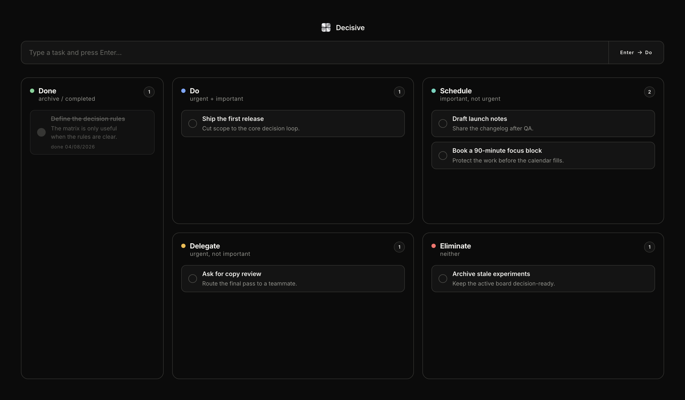

Do
Urgent and important. Do it now.
Capture a task, place it by consequence, and keep the next move visible. Focused, private, and fast, with no account and no cloud: your tasks stay on your Mac.
First launch note
Releases are not signed yet, so macOS may block the first open. Go to System Settings → Privacy & Security, choose Open Anyway, and confirm once. Only approve the copy downloaded from the official release page.
One capture field, four consequence quadrants. Every task lands where it belongs, and you can move it in a single drag.
Urgent and important. Do it now.
Important, not urgent. Give it a time and protect it.
Urgent, not important. Hand it to someone who can move it.
Neither urgent nor important. Let it go.
Capture the task. Keep the next move visible.
The capture field is the whole inbox. Type the task, press Enter, and it lands in Do. Edit in place whenever you want.
Scatter plots your board on urgency and importance so you can see the shape of the week before you touch a single task. Drag a task between quadrants and the matrix follows.
Completed tasks move to the archive with a single undo. Deleting asks twice on purpose.
Every part of Decisive at a glance: the capture field, four quadrants, live counts, and the finished archive.
